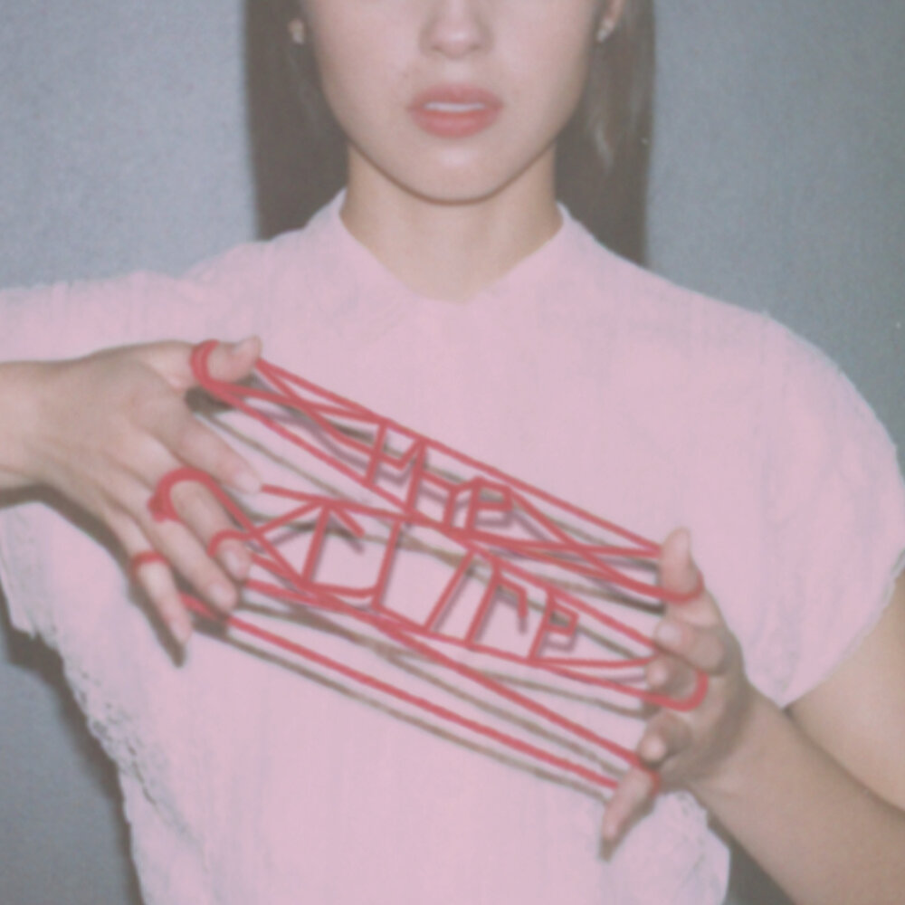

Drop Dead
Lead single from Olivia Rodrigo's third studio album, You Seem Pretty Sad for a Girl So in Love, released on April 17, 2026. The song marks a significant thematic shift away from the anger and heartbreak of her previous records to capture the euphoric rush of new love and infatuation. Musically, it embraces a synth-pop sound with driving guitars, perfectly sonically representing the feeling of being so happy you could faint. It serves as the opening chapter of a more mature, conceptual project that explores the entire cycle of a relationship.
The track is widely interpreted as being about her relationship with actor Louis Partridge. Lyrics describe the giddy excitement of a first date and daydreaming about a future together, featuring lines about traveling to Japan or France. Set to synth-pop production, it opens a more mature, conceptual chapter in her discography focused on the full cycle of romance.
The Cure
The second single from Olivia Rodrigo's third album, You Seem Pretty Sad for a Girl So in Love. The song serves as the emotional climax of the record, realizing that love cannot fix internal struggles or mental health issues. In the chorus, she sings about having "poison" in her head and doubts in her heart, admitting that while a partner feels like medication, they will never be the actual cure.
The track sits at the turning point between the two distinct halves of the album. While the first part focuses on the euphoric rush of infatuation found in songs like "drop dead," this ballad marks the shift into the record's sadder half. It introduces the deep melancholy and inevitable heartbreak that define the rest of the project, acting as the thesis statement for its title.

You Seem Pretty Sad for a Girl So in Love

- Drop Dead
- Stupid Song
- Honeybee
- Maggots for Brains
- U + Me = <3
- My Way
- Purple
- The Cure
- Begged
- What's Wrong with Me
- Less
- Expectations
- Cigarette Smoke